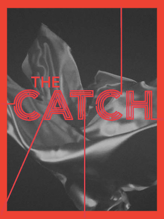

The Series Theatre by Shonda Rhimes is a Theatre that projects your favorite series for hours!
← Go Back to All Shows

THE CATCH
The Catch is an American comedy-drama television series that aired on ABC from March 24, 2016 to May 11, 2017.[1] Starring Mireille Enos and Peter Krause, it was created by Jennifer Schuur, Kate Atkinson, and Helen Gregory, developed by Allan Heinberg, and was executive produced by Shondaland's Shonda Rhimes and Betsy Beers. Julie Anne Robinson also served as an executive producer, and directed the pilot episode. The series premiered on May 12, 2016, and was renewed for a second season.